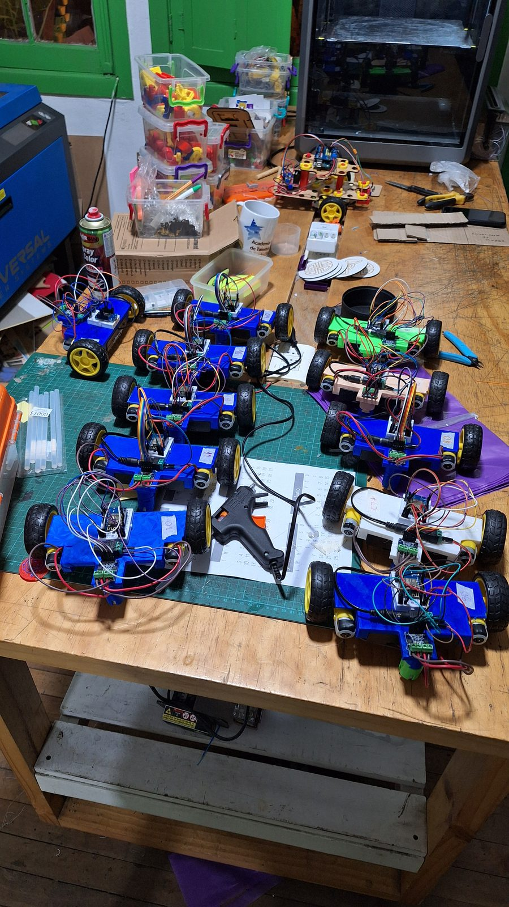
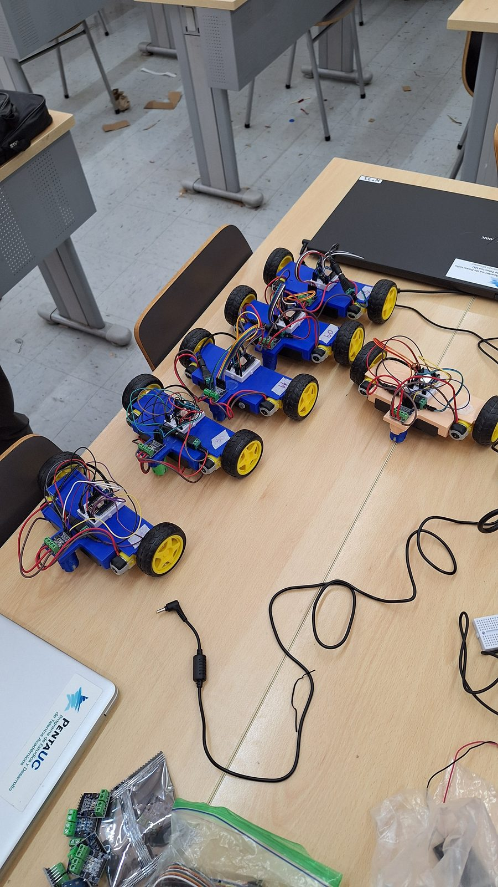
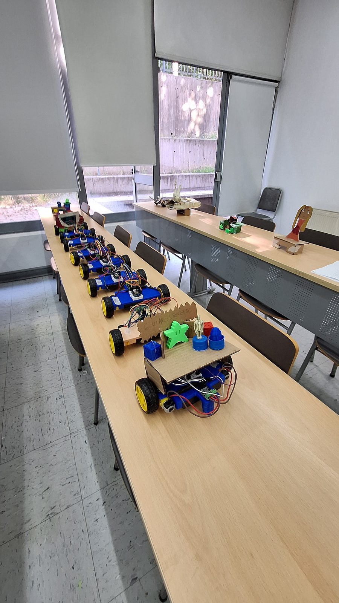
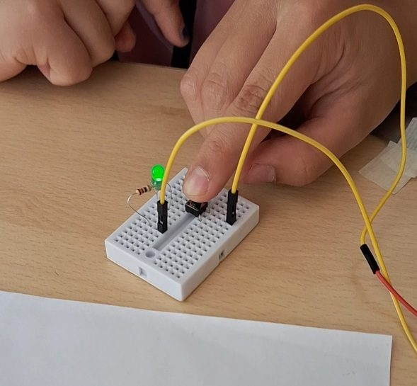
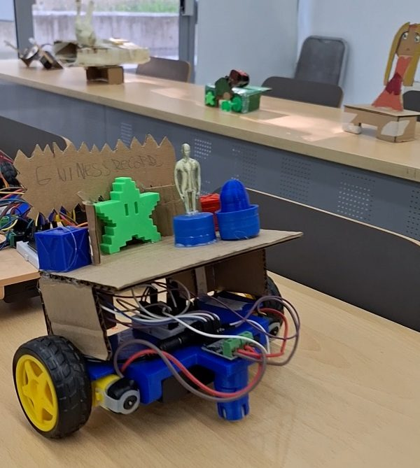
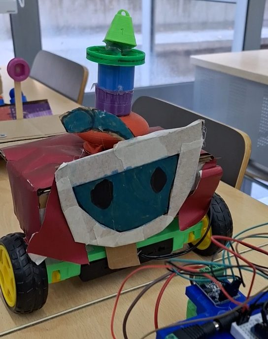
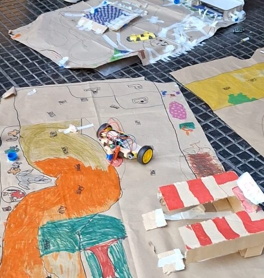

Misión Espacial
Robótica y exploración: construir robots que conquistan nuevos mundos
La versión para niños y niñas de 8 y 9 años: una misión espacial distinta cada día, construyendo y programando robots exploradores con materiales cotidianos y piezas impresas en 3D.

Adaptar robótica real a estudiantes de 8 y 9 años obliga a cambiar todo el andamiaje sin bajar el nivel técnico. La solución fue estructurar el curso como una serie de misiones espaciales: cada día plantea un desafío concreto (navegar, aterrizar, desplazarse, personalizar) y el robot va creciendo misión a misión.
El robot educativo desarrollado el semestre anterior hizo posible este curso. Al tener una base propia y confiable, pude entregar a niños de esa edad un robot que de verdad se mueve y se controla, en lugar de una maqueta que solo lo aparenta.
La evaluación de cada misión tiene tres niveles: básico, medio y avanzado. Eso permite que un grupo con ritmos muy distintos avance junto sin que nadie quede fuera. El curso cierra con una muestra, un discurso preparado por cada equipo y entrega de diplomas.
Curso de creación propia
Diseñé la propuesta completa para CREA UC, incluida la adaptación de contenidos de robótica a un rango etario de 8 y 9 años.
Sobre el robot educativo
Este curso se apoya en el robot educativo que creamos con Elvis Andrade para Robots Makers en Acción.
Temario
- 01Empatizar: ¿qué es un robot?Tipos, usos y rol de los robots en la exploración espacial. Actividad de integración.
- 02Definir: electrónica básicaMisión 2: diseñar un sistema para navegar el espacio y sortear los desafíos identificados.
- 03Idear: sistema de aterrizajeMisión 3: prototipo de aterrizaje con materiales simples y simulación con pesos.
- 04Prototipar: el vehículoConexión de motores al control remoto, ensamblaje y optimización del vehículo.
- 05Testear: personalización y discursoTerminar los prototipos, preparar la maqueta y el discurso de presentación.
- 06Muestra finalEnsayo general, presentación de cada equipo y entrega de diplomas.
Registro






